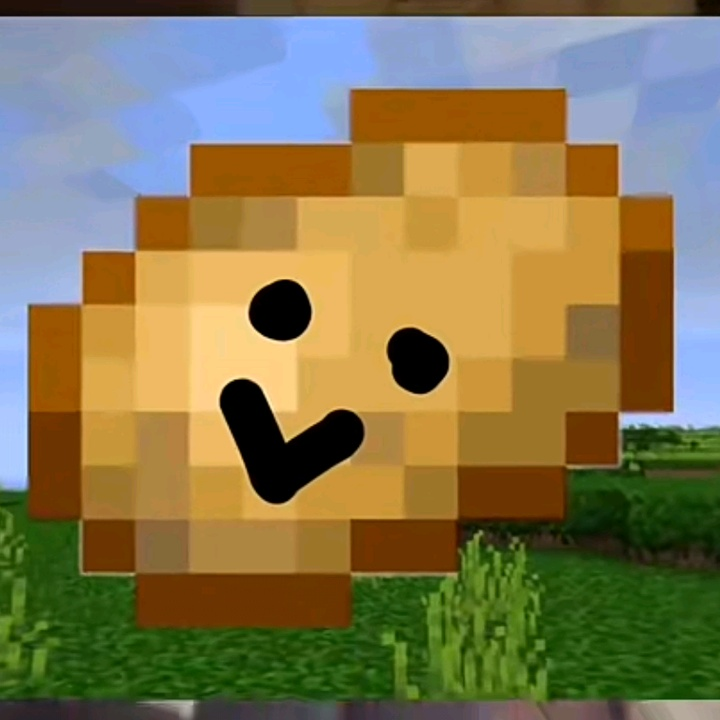

Sooooo I made my first tiktok in like
16th of february 2021?
And i was like "yeah thats fun and sh!t" and decided I'll start making more
Of these, anddd yeah in april 2021 a video i made blew up
Andd I exploded straight to 1000 followers
Then a trend went viral called "comments reading" and I did some of those and they got me some views yk
I jumped to 3000 followers but got stuck at that number for 2 months ;-;
Then I started making skits, like I remade funny sounds in minecraft
And that series is the main thing I'm doing for 5 months now (maybe more idk).
So yeah thats my story and now I have 10k followers and made alot of friends.
Also follow these people lol.
Andddd I have this army called "the smily potato army" and here is the pfp to join it lol
